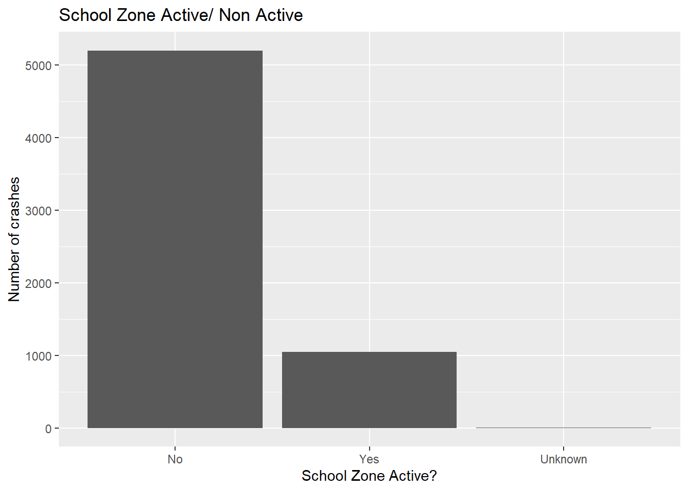

Code
crash_data_raw = read_excel("data/nsw_road_crash_data_2016-2020_crash.xlsx")
crash_data = crash_data_raw %>% clean_names()Motor vehicles must reduce speed to 40 km/h or 60 km/h at active school zone hours. This has been an effective method to reduce fatal and injury crashes(Sun et al. 2018). We aim to investigate whether we should add more measures to increase road safety around schools.
We investigate two null hypothesis.
Q1: In school zones, the likelihood of a crash happened inside school zone hours is equal likely to those happened outside the hours based on time proportion.
Q2: Inside school zone hours, the severity of crash is the same as those happened outside school hours.
The data set called “crash_data” is obtained from Data.NSW which records the crash information.
First, Let’s examines data quality. Load dataset and clean column names
crash_data_raw = read_excel("data/nsw_road_crash_data_2016-2020_crash.xlsx")
crash_data = crash_data_raw %>% clean_names()Let’s examine the proportion of data missing.
missing_data_vector = sapply(crash_data, function(x) sum(is.na(x)) / length(x))
missing_data_df = data.frame(column = names(crash_data),
missing_proportion = missing_data_vector,
row.names = NULL)
missing_data_df %>% filter(missing_proportion > 0) %>% arrange(desc(missing_proportion)) %>%
gt() %>%
tab_header(title = "Missing Data Proportions") %>%
cols_label(
column = "Column",
missing_proportion = "Missing Proportion"
) %>%
fmt_percent(missing_proportion, decimals = 1)| Missing Data Proportions | |
|---|---|
| Column | Missing Proportion |
| primary_temporary_feature | 98.5% |
| primary_hazardous_feature | 98.1% |
| dca_supplement | 88.0% |
| primary_permanent_feature | 76.6% |
| route_no | 35.3% |
| other_tu_type | 28.1% |
(Goodness of fit) Null Hypothesis: In school zones, the likelihood of a crash happened inside school zone hours is equal likely to those happened outside the hours based on time proportion.
Many variables are unnecessary to investigate Q1. By intuition, we only need to count the number of crashes when the school zone is active and when it is inactive. Thus, only “school_zone_active” is the necessary variable. From the above, there is no missing data in the chosen columns.
q1_data = crash_data %>% select(c(crash_id, school_zone_location, school_zone_active))Visualize the distribution of crashes happened in school zones
q1_data %>% select(school_zone_active) %>% filter(school_zone_active != "Not a school zone") %>%
ggplot() + aes(x = school_zone_active) +
geom_bar() + ggtitle("School Zone Active/ Non Active") + scale_x_discrete(limits = c("No", "Yes", "Unknown")) + ylab("Number of crashes") + xlab("School Zone Active?")
It is safe to exclude the data where “school_zone_active” is “Unknown” because only a tiny proportion of data is “Unknown”.
q1_data = q1_data %>% filter(school_zone_location == "Yes" & school_zone_active != "Unknown") %>% select(school_zone_active)We choose the Test Statistics T as below, so we can use the Chi-squared distribution to test our hypothesis. T = \sum_{i=1}^{2}\frac{(Y_i - e_i)^2}{e_i} where e_i = p_i\sum_{i=1}^{k}y_i, meaning the expected counts under the null distribution.
Although we assumed equal likelihood between different hours, active school zone consists only 3 hours per school day. Plus there are 160 school days per year, so we cannot give 50/50 for Active/Non-active hours respectively. We alter p_i to account for this proportion. Hence, p_i = \frac{160}{365} * \frac{3}{24} = 0.054. In other words, think each crash datapoint as a Bernoulli trial.
Optional explaination for p_i \neq 0.5 , skip if needed:
# For example, If I show you 80% of the crash happens in daylight, then I can
# convince you that one is more likely to crash during daylight, because
# the proportion of daylight to night is roughly 50:50. However, if you live in
# Finland and currently we have the polar sun, then you can be hardly convinced
# that travelling during daylight is more dangerous, because most of the day is
# daylight，so 80% may not seem absurd. Therefore, we need to adjust p_i for the
# different proportions of time. Merging the data into one data frame.
q1_test_frame = q1_data %>% group_by(school_zone_active) %>% summarise(n = n())
q1_test_frame$p_i = c((160)/365*(24-3)/24 + (365-160)/365, 160/365*3/24)
q1_test_frame$e_i = q1_test_frame$p_i * sum(q1_test_frame$n)
T_i = vector(length = 2)
for(i in 1:2) {
T_i[i] = (q1_test_frame$n[i]-q1_test_frame$e_i[i])^2/q1_test_frame$e_i[i]
}
q1_test_frame$T_i = T_iLet’s visualize the observed crash count vs expected count under the null:
q1_test_frame %>% rename(actual_obs = n, expected_obs = e_i) %>%
pivot_longer(cols = c(actual_obs, expected_obs), names_to = "observation", values_to = "count") %>% ggplot() + aes(x = school_zone_active, y = count, fill = observation) + geom_bar(stat="identity", width=.6, position = "dodge") The Test statistics follows:
q1_test_frame %>% gt() %>% tab_header(title = "Test Statistics")| Test Statistics | ||||
|---|---|---|---|---|
| school_zone_active | n | p_i | e_i | T_i |
| No | 5198 | 0.94520548 | 5903.7534 | 84.368 |
| Yes | 1048 | 0.05479452 | 342.2466 | 1455.348 |
t_0 = sum(q1_test_frame$T_i)
t_0[1] 1539.716The Test Statistics is 1539.716 We can obtain the p-value from a chi-squared distribution with a degree of freedom of 1.
1 - pchisq(t_0, df = 23)[1] 0There is sufficient to reject the null hypothesis. A crash is not equally likely to happen during the active school zone time and inactive school zone time. From the visual, it seems that a crash is more likely to happen during the school zone hours. It could be because the traffic volume is higher when parents drop-off or pick-up their children, and higher traffic volume means more crashes.
(Test for homogeneity) Null Hypothesis: Inside school zone hours, the severity of crash is the same as those happened outside school hours.
This is a test for homogeneity. The null assumes the probability for each severity of crash is the same regardless of active school zone hours/ Non-active school zone hours.
“Degree of crash - detailed” is chosen because the variable describes the severity of injury sustained by one of the traffic units. Like Q1, “School zone active” is chosen to indicate two different populations in the test of homogeneity.
q2_data = crash_data %>% select(c(degree_of_crash_detailed, school_zone_active)) %>% filter(school_zone_active != "Unknown" & school_zone_active != "Not a school zone")Let’s visualize the data distribution
q2_test_frame = table(q2_data$school_zone_active, q2_data$degree_of_crash_detailed)
# print(ftable(q2_test_frame))
q2_test_frame %>% data.frame() %>% pivot_wider(names_from = Var2, values_from = Freq) %>% rename(school_zone_active = Var1) %>% gt() %>% tab_header(title = "Contigency Table")| Contigency Table | |||||
|---|---|---|---|---|---|
| school_zone_active | Fatal | Minor/Other Injury | Moderate Injury | Non-casualty (towaway) | Serious Injury |
| No | 44 | 1075 | 1411 | 1674 | 994 |
| Yes | 4 | 295 | 294 | 271 | 184 |
q2_data %>% ggplot() + aes(x = degree_of_crash_detailed, fill = school_zone_active) + geom_bar(position = "dodge", width = .5) + theme(axis.text.x = element_text(angle = 45, vjust = 0.8)) + xlab("Severity of crash")The Test Statistics is: T = \sum_{i=1}^{2} \sum_{j=1}^5 \frac{(Y_{ij} - e_{ij})^2}{e_{ij}} Running a chi-squared test returns:
chisq.test(q2_test_frame, correct = FALSE)
Pearson's Chi-squared test
data: q2_test_frame
X-squared = 37.303, df = 4, p-value = 1.56e-07There is strong evidence that the distribution of crash severity is different when the school zone is active. From the visuals, it seems that a crash happened outside the school zone hours is most likely non-casualty. In contrast, a crash happened during the school zone is more likely to be one of the minor injury, moderate injury and non-casualty. Minor injury being the most likely but not by much.
We found that school zone alters the injury distribution. By visual inspection, if we exclude accidents that only result in vehicle damage (tow-away incidents), then an accident occurring during school hours is more likely to result in minor injuries, as opposed to moderate injuries which are more common outside of school hours.
However, we should investigate more on driver behaviors and each school area to reduce the degree of crashes. We must be reminded that there may be higher traffic volumes during school zone hours and a non-casualty crash is not the most likely outcome.